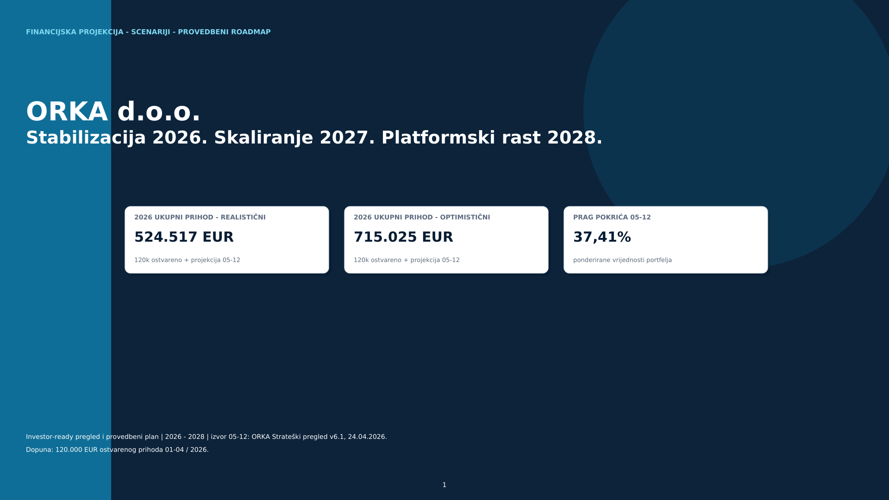
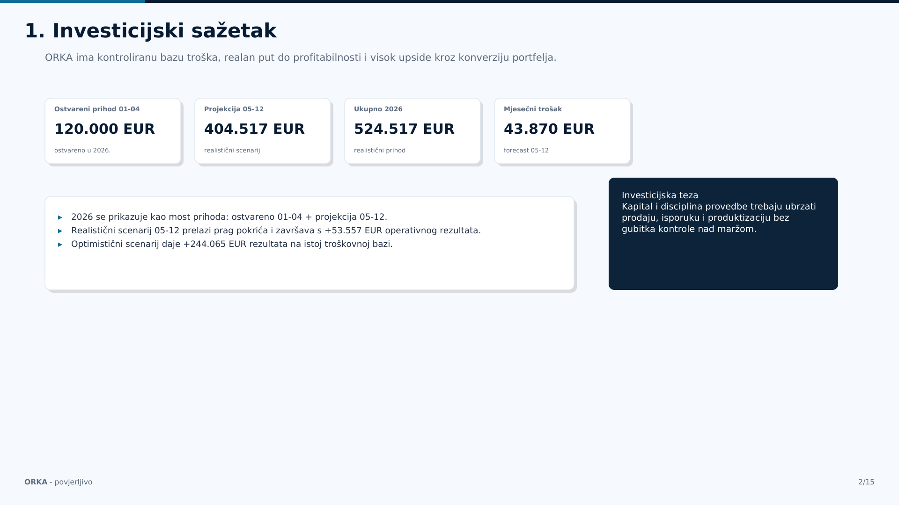
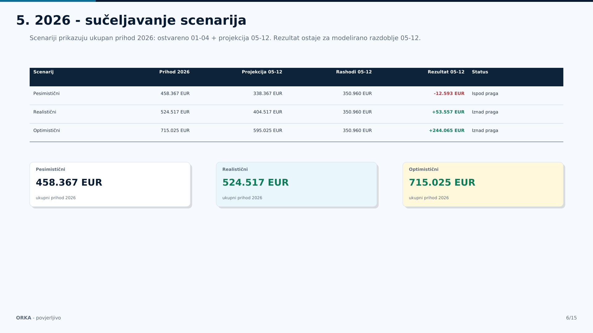
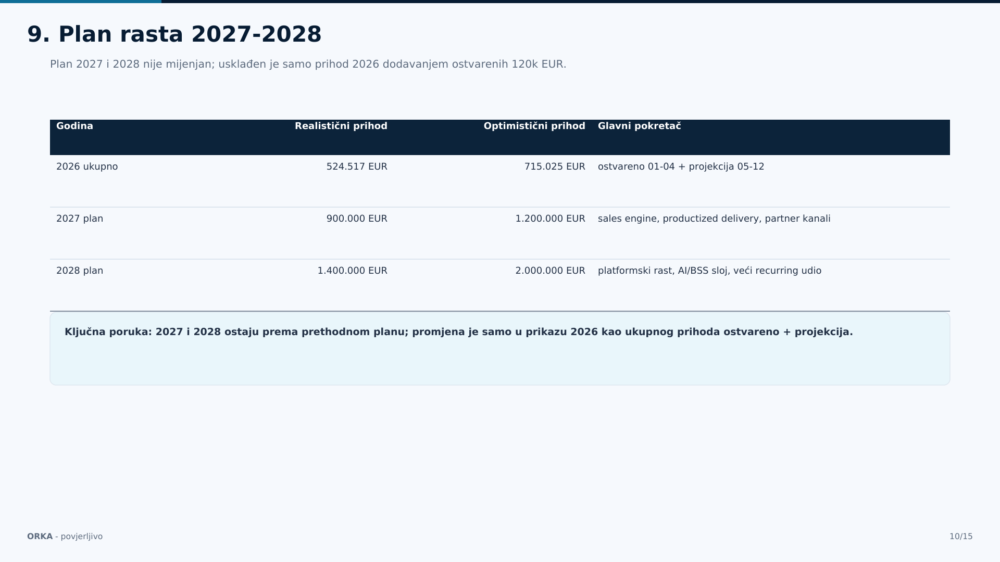
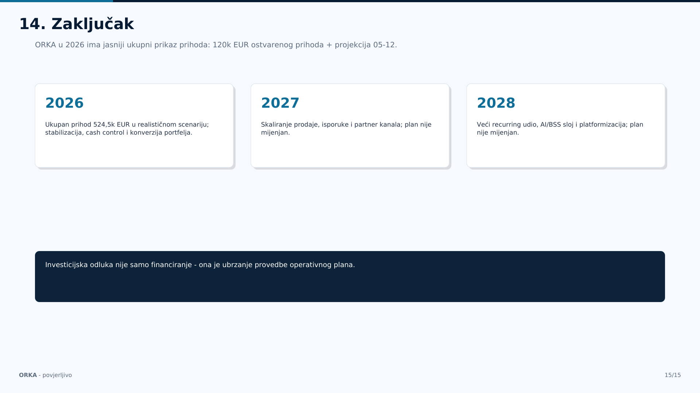

Pretplate i održavanje
Stabilnost, odnos s postojećim klijentima i baza za upsell bez proporcionalnog rasta troška.
Financijska projekcija · provedbeni roadmap
Investicijska priča fokusirana je na kontroliranu bazu troška, dokaziv put do profitabilnosti i upside kroz konverziju portfelja, productized delivery i AI/BSS sloj.

Investicijska teza
ORKA prelazi iz tradicionalnog ERP modela u AI-driven system integrator s ERP coreom, uz veći udio ponavljajućih prihoda i standardiziranih isporuka.
Stabilnost, odnos s postojećim klijentima i baza za upsell bez proporcionalnog rasta troška.
ERP implementacije, integracije, custom aplikacije, mobile i eCommerce kao glavni izvor rezultata 2026.
Podaci, workflow, izvješća, automatizacija i operativna inteligencija kao platforma za 2028.
2026 baza i prag pokrića
Puna realizacija portfelja nije uvjet za break-even. Glavna poluga je konverzija ugovorenih projekata i komercijalnog pipelinea.
| Scenarij | Prihod 2026 | Projekcija 05-12 | Rashodi 05-12 | Rezultat 05-12 | Status |
|---|---|---|---|---|---|
| Pesimistični | 458.367 EUR | 338.367 EUR | 350.960 EUR | -12.593 EUR | Ispod praga |
| Realistični | 524.517 EUR | 404.517 EUR | 350.960 EUR | +53.557 EUR | Iznad praga |
| Optimistični | 715.025 EUR | 595.025 EUR | 350.960 EUR | +244.065 EUR | Iznad praga |
Pozicioniranje
Cilj je veći udio ponavljajućih prihoda, standardizirane isporuke i rast bez proporcionalnog rasta troška.
Pretplate, održavanje i podrška stvaraju stabilnost i prostor za upsell.
Mini rješenja, ponovljive ponude i jasni acceptance kriteriji ubrzavaju isporuku.
Podaci, automatizacija i operativna inteligencija povećavaju maržu i ponovljivost.
Plan rasta 2027-2028
Rast se oslanja na sales engine, productized delivery, partner kanale i veći recurring udio. Optimistični scenarij zadržava istu logiku, ali s boljom konverzijom i bržom produktizacijom.
Ukupan prihod 524,5k EUR u realističnom scenariju; cash kontrola i konverzija portfelja.
Realistični plan 900k EUR, optimistični 1,2M EUR kroz prodaju, isporuku i partnere.
Realistični plan 1,4M EUR, optimistični 2,0M EUR uz AI/BSS sloj i veći recurring udio.
| Godina | Realistični prihod | Realistični EBIT | Optimistični prihod | Optimistični EBIT | EBIT marža |
|---|---|---|---|---|---|
| 2026 | 524.517 EUR | +53.557 EUR | 715.025 EUR | +244.065 EUR | 13,2% / 41,0% |
| 2027 | 900.000 EUR | +400.000 EUR | 1.200.000 EUR | +600.000 EUR | 44,4% / 50,0% |
| 2028 | 1.400.000 EUR | +750.000 EUR | 2.000.000 EUR | +1.100.000 EUR | 53,6% / 55,0% |
Provedbeni roadmap do kraja 2026.
Svaki cilj ima vlasnika, ritam i metriku. Fokus je na prodaji, isporuci, proizvodu, recurringu i tjednoj financijskoj kontroli.
Operativni model
Tjedni pipeline i delivery blockers, mjesečni RDG i forecast, te kvartalna strategija za produktizaciju i partnere.
Pipeline, ponude, decision log, datum zatvaranja, vjerojatnost i sljedeći korak.
Milestonei, kapacitet, acceptance kriteriji, promjene opsega i naplata.
Cash, potraživanja, marža, runway, forecast i scenarijska kontrola.
Rizici i kontrole
Fokus kontrola je na naplati, opsegu isporuke, ovisnosti o EU projektima, kapacitetu i brzini produktizacije.
Utjecaj na cash flow i runway.
Tjedni AR review, avansi i milestone naplata.Pad marže kroz neplaćeni scope creep.
Change request pravilo i acceptance kriteriji.Sporije skaliranje i slabija ponovljivost.
2-3 ponovljiva paketa do kraja 2026.Namjena kapitala
Investicijska odluka nije samo financiranje. To je ubrzanje operativnog plana koji već ima prag pokrića, scenarije i ritam kontrole.
Stabilnost isporuke i naplate dok se konvertira portfelj.
Brža konverzija, partner kanali i jasniji komercijalni ritam.
Veća marža, ponovljivost i platformski potencijal za 2028.
Zaključak: 2026. stabilizira model, 2027. skalira prodaju i isporuku, 2028. otvara platformski rast.
Izvorni materijal
Donje sličice služe kao brzi trag prema izvornom decku. Glavni web sadržaj je prepisan u HTML radi čitljivosti i profesionalnog prikaza.



